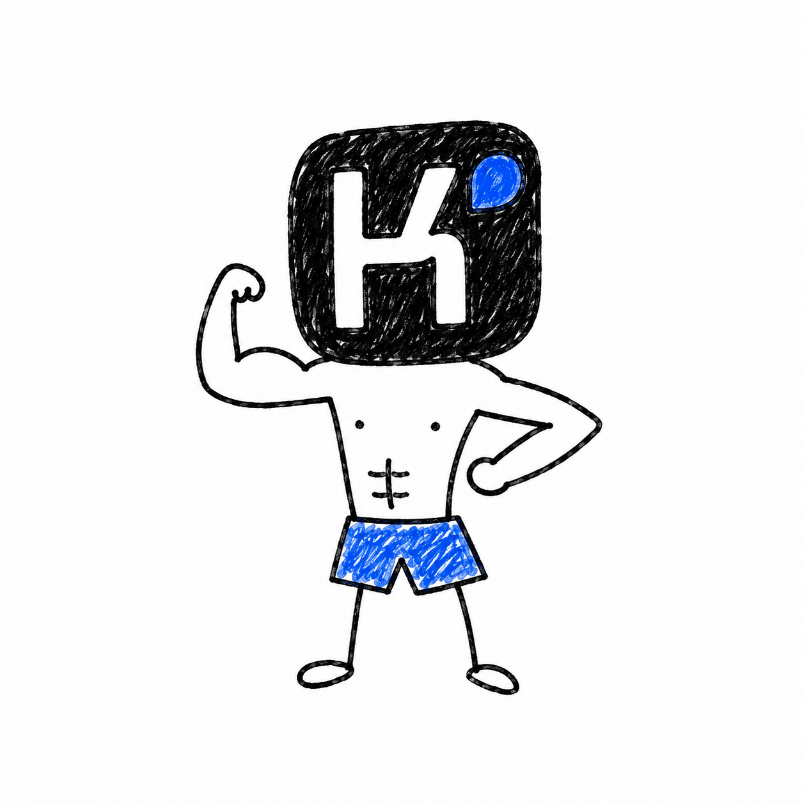

top counted cluster
101.19 / 101.03
Grok 4.6 and Muse Spark 1.2. Their paired difference is +0.17 kg, with a 95% interval that crosses zero.
A model can make a good plan and still lose the year. Bench-bench asks four models to coach Dave for 52 weeks while sleep, money, work, childcare, and missed sessions keep changing what “good” looks like.

Grok 4.6 and Muse Spark 1.2 finish almost exactly together. GPT-5.6 Sol is a lower tier. Claude Opus 5 has the highest raw mean, but three seeds cross the pain boundary, so its counted mean is intentionally withheld.
Grok 4.6 and Muse Spark 1.2. Their paired difference is +0.17 kg, with a 95% interval that crosses zero.
Opus episodes exceeded 14 pain days. The raw scores stay visible; the leaderboard does not pretend they count.
Transport failures in v0.2. The previous Kimi result had 702, plus four episodes with no successful model decisions.
Headline score = the average of three standardized tests at weeks 44, 48, and 52 after a fixed three-day taper. The noisy weekly estimate is not the score.


Every model saw the same ten public seeds. The lines move together because scenario difficulty is shared; the distance between lines is the part we read as model behavior.
| Seed | Grok 4.6 | Muse 1.2 | GPT-5.6 | Opus 5 raw |
|---|
The first paid run was valuable evidence, but it was not a clean leaderboard. Kimi K3’s reported 90.48 kg was transport-contaminated and is retained here only as a historical diagnostic.
The analyzer now separates rejected outputs, repair attempts, successful repairs, automatic fallbacks, and transport failures. The public run was pre-registered, hashed, retained, replayable, and generated by one named command.
In v0.2, all 40 transcripts were complete, credential-free, and transport-clean. The Kimi failure mode is now a visible exclusion rather than a fake ranking row.
Opus looked strongest in raw kilograms, but its plan crossed the pain boundary on three seeds. The constraint is doing its job: a high score that requires violating the protocol is not a counted result.

Its raw diagnostic mean was 90.48 kg, but 702 provider transport failures excluded all 10 seeds from counted aggregates. Four episodes contained zero successful model decisions. That result measures provider reliability and runner resilience—not Kimi’s long-horizon planning.
A 52-week plan is hundreds of decisions. The model has to express a legal action, recover from rejection, keep the ledger solvent, and continue when the real plan is interrupted.
Every model/seed pair reached week 52.
All provider calls completed without transport exclusion.
207 rejected outputs; no hidden validation rule found.
All occurred on weekly turns and were logged.
All three belonged to Claude Opus 5.
Grok 4.6, Muse Spark 1.2, and Opus are close enough that ten seeds do not support a stable top-three ordering. GPT-5.6 Sol is separated from each of them by roughly 4.6–5.6 kg on paired raw scores.
That is a useful result, but it is not “intelligence measured on a single number.” It is a comparison under this engine, prompt, provider configuration, and seed set.
The process was iterative: find a plausible-looking result, attack the mechanism beneath it, and add a check that fails loudly the next time.
The project started with a simple question: can a model keep a training plan alive when life repeatedly breaks the plan?
Fifty live episodes made the protocol real—and exposed Kimi transport contamination, undocumented limits, and ambiguous repair counters.
Volume stacking, compressed fallbacks, zero-load credit, home-rack dominance, and ledger exploits became regression policies instead of anecdotes.
Rep-rate constraints, a conserved weekly ledger, price-aware allocations, stimulus caps, and execution transformations moved the benchmark from a schema test toward a simulator.
Strength, fatigue, detraining, sleep, frequency, drift, hidden tests, and novice-range framing were separated into evidence, persona assumptions, and calibration choices.
Seeds 400–409, four models, hashes, pricing, sampling, a 200k Grok guard, the 100% counted rule, and the two possible result framings were frozen before calls.
Prompt conformance, deterministic rehearsal, Anthropic caching, adapter checks, incremental transcripts, archive manifests, and the clean-checkout byte test came before the public run.
The v0.2 result is a tiered comparison: Grok/Muse unresolved at the top, GPT lower, Opus raw-high but pain-voided, with the old Kimi row corrected.
The through-line: every time a number looked plausible but the machinery was wrong, the next iteration added a liveness check, a constraint inventory entry, a separate metric, or a retained artifact.
The current benchmark is narrower than the original ambition. That is a strength if the claim stays narrow.